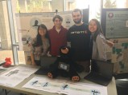
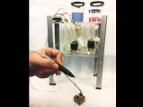
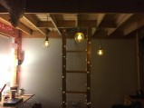
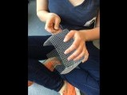
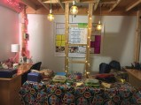
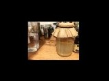
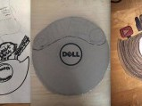

EDUCARE EDUTEDDY
for our User-Oriented Collaborative Design class, we worked with educators of students with special needs. after months of user visits,
framework mapping, and synthesizing, we designed a smart-teddy that supports the student after an emotional crisis in the classroom,
provides the teacher the recuperation time (s)he needs, and collects anonymous data to improve post-crisis strategy tools long-term. Peek
at our process here.

COLOR SENSING PEN
a pen that scans an object, detects its color, and then proceeds to write in that perceived color. check out our project website
here.

LOFT
one of seven rooms with expanded celings in our dorm building, my roommate and I got voted to build a loft to live in for the year.
it took us simply a day to drill together the wooden foundation, and simply the next couple of weeks to fully furnish it and make it feel like home.

3D SCANNER
using Arduino and servo motors, we built a pan-tilt motor complete with an infrared distance sensor that can scan an object and
plot its 3D shape in MATLAB.

RICA'S PANINIS
every other Friday, our hallway opens our doors for an open market called "4N Friday." my roommate and I sell homemade paninis, and strive simply to
break even and to bring joy to people's lives with a gooey, hot-pressed sandwich that oozes with love, happiness, and good vibes.

IDIN
as a researcher for the International Development Innovation Network, my co-researcher and I spent the semester designing hands-on tutorials for those
in low-income and resource-poor areas to teach useful fabrication techniques. our curricula included how to make a charcoal press, a sheet metal water
bucket, and a living machine. check out one of our instructor guides
here.

SECRET SANTA
an upperclassmate and I exchanged gifts for the holiday season. I wanted to craft something personal, and I knew that he lives and breathes music.
inspired by a vinyl record, I added details that encapsulated some of our inside jokes from the year.
{kind=link}
{kind=link}
{kind=link}
{kind=link}
{kind=link}
{kind=link}
{kind=link}